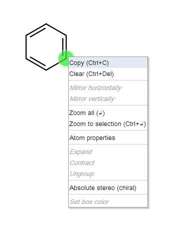

Marvin JS User's Guide
Table of Contents (Start)
Context Menus
The pop-up menus (or context menus) of Marvin JS can also make chemical structure editing more efficient. The pop-up menus can be opened with a right-click on the appropriate object (e.g., on an atom or on a bond). The elements of these menus can be divided up into five classes.
Atom context menu;
Bond context menu;
Group context menu;
R-label context menu;
Graphical objects context menu;
Edit context menu;
Selection context menu
In the first two cases, you do not need to select an atom or a bond in order to open the respective context menu; if you right-click on the object you want to edit, the appropriate pop-up menu will appear. Among the elements of the Edit pop-up menu there are options which are available only if there is active selection on the canvas. The same applies for the last group of pop-up menu elements: they appear only upon selection. In many cases, the displayed context menu contains a combination of the elements from the classes mentioned above. Clicking on a selected atom, for example, will result in the following pop-up menu:

Atom Pop-up Menu
The Atom pop-up menu opens by right-clicking on an atom. It contains tools for editing atoms and their properties:
Atom Properties: opens the Atom properties dialog window.
Bond Pop-up Menu
The Bond pop-up menu opens by right-clicking on a bond. It opens the Bond properties dialog window which contains tools for editing atoms and their properties.
Group Pop-up Menu
Right-click on an expanded/contracted abbreviated group while its feedback is active will open the group contextual menu containing the following menu items:
-
Expand: Displays the whole structure of the chemical group instead of its abbreviated name.
-
Contract: Displays the abbreviation of a chemical group.
-
Ungroup: The "abbreviated group" status is removed from the group.
The "Expand" and "Contract" options are never active simultaneously. In case of a contracted abbreviated group, only the "Expand" option is available, while for an expanded group, only the "Contract" menu item is active.
R-label Pop-up Menu
The R-label contextual menu also offers some options for managing R-group definition lists. These menu items are the following:
-
Ungroup: The R-group definition list in question is ungrouped, but its elements will remain on the canvas.
-
Add to this group: The selected molecules are added to this particular R-group definition.
-
Remove from this group: The selected fragments are removed from the R-group definition in question.
Graphical Objects Pop-up Menu
This pop-up offers formatting options for graphical objects (e.g., for rectangle boxes):
-
Set box color: The color of the graphical objects' (boxes) edges and background can be selected from a predefined list.
Edit Pop-up Menu
Right-click on an empty spot on the canvas will open the Edit pop-up menu containing general editing options. Some of them are available only if there is active selection on the canvas.
-
Copy: copies the selection to the clipboard;
-
Paste: inserts the content of the clipboard into the canvas of Marvin for JavaScript;
-
Clear: deletes everything on the canvas;
-
Zoom All: determines the optimal rate of magnification to see everything on the canvas;
-
Zoom to Selection: increases the zoom ratio with the selected object in the center.
-
Absolute stereo (chiral): sets the "Absolute" chiral flag on the entire structure indicating that the molecule represents a single, well-defined stereoisomer.
Pop-up Menu Elements upon Selection
These tools appear only in the context menu if there is active selection on the canvas. The mirror tools are active only when the selected object can be mirrored (whole molecule or fragment connected with no more than one bond to the rest of the structure).
-
Mirror Horizontally: mirrors a selected molecule or fragment horizontally;
-
Mirror Vertically: mirrors a selected molecule or fragment vertically.